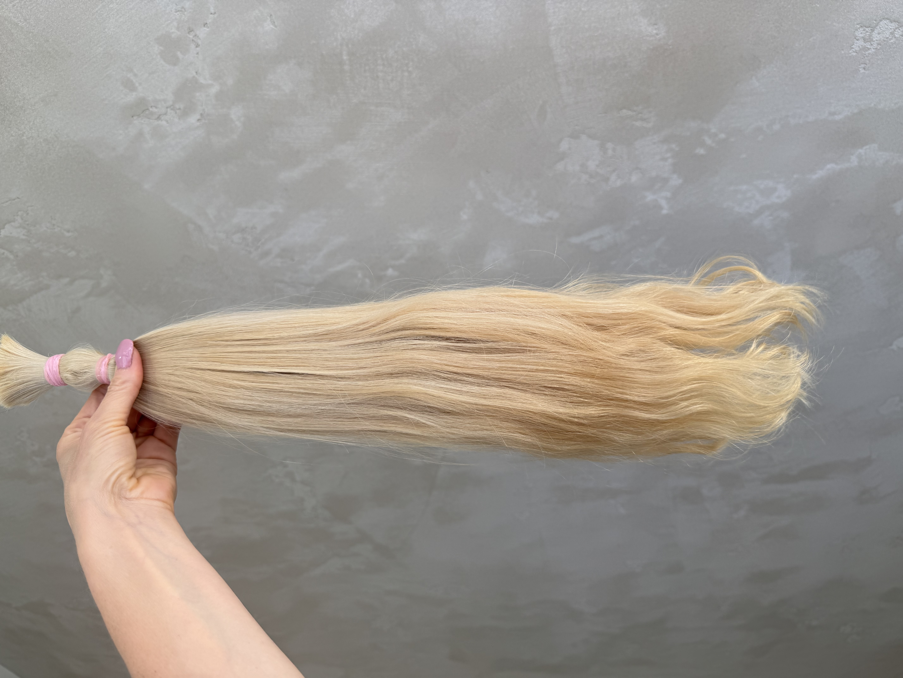

Wie aus Virgin-Echthaar Blond wird
Wir zeigen, wie aus Virgin-Echthaar Blond entsteht und wie wir es so aufhellen, dass das Haar möglichst viel von seiner Qualität behält.

Was ist Virgin-Echthaar?
Virgin-Echthaar wurde nie chemisch behandelt, gefärbt oder aufgehellt.
Die Kutikula ist intakt, das Haar hat seine volle Festigkeit und seinen natürlichen Glanz. Genau deshalb ist es die ideale Grundlage für ein hochwertiges Blond. Es verträgt das Aufhellen viel besser als Haar, das schon chemisch behandelt wurde.
Aufhellen mit Blick auf die Qualität
Blond aus mittlerem und dunklerem Virgin-Echthaar entsteht durch Aufhellen (Blondieren). Ziel ist es, das Haar heller zu machen und dabei seine Struktur so wenig wie möglich anzugreifen. Das braucht Zeit, Erfahrung und ein behutsames Vorgehen ohne Abkürzungen.
Worauf es ankommt
- Schritt für Schritt. Wir hellen in Etappen auf, nicht mit Gewalt in einem einzigen Schritt.
- Kontrolle der Festigkeit. Wir beobachten das Haar während des ganzen Prozesses, damit es Elastizität und Glanz behält.
- Tönen. Den Farbton stimmen wir so ab, dass das Blond rein bleibt, ohne unerwünschte Untertöne.
- Pflege. Nach dem Aufhellen pflegen wir das Haar und prüfen es erneut.
Vom Virgin-Echthaar zum reinen Blond
Auswahl des Haars
Wir wählen nur kräftiges, gesundes Virgin-Echthaar mit intakter Kutikula.
Schonendes Aufhellen
Wir hellen nach und nach in Etappen auf, damit Festigkeit und Glanz erhalten bleiben.
Tönen
Den Farbton bringen wir auf das gewünschte Blond, ohne unerwünschte Untertöne.
Pflege & Kontrolle
Wir pflegen das Haar und prüfen jedes Stück noch einmal.
Sehen Sie sich den Prozess an
Echte Aufnahmen aus der Blond-Herstellung: vom Aufhellen bis zum finalen Tönen und zur Qualitätskontrolle.
Die Videos folgen in Kürze. Aktuelle Aufnahmen finden Sie auch auf Instagram unter @silki_hair_cz.
Sie suchen ein blondes Stück?
Sehen Sie sich das vorrätige Blond an oder lassen Sie sich bei der Wahl des Farbtons beraten.